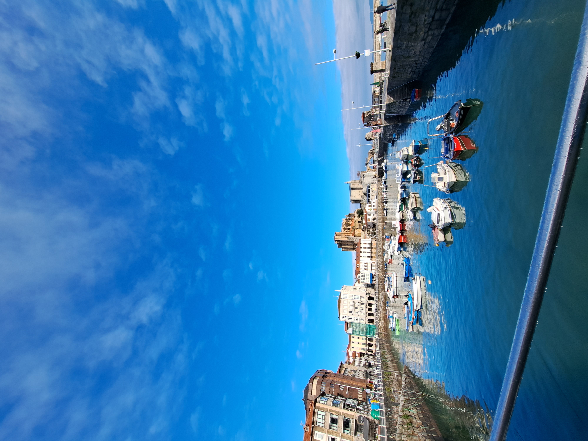
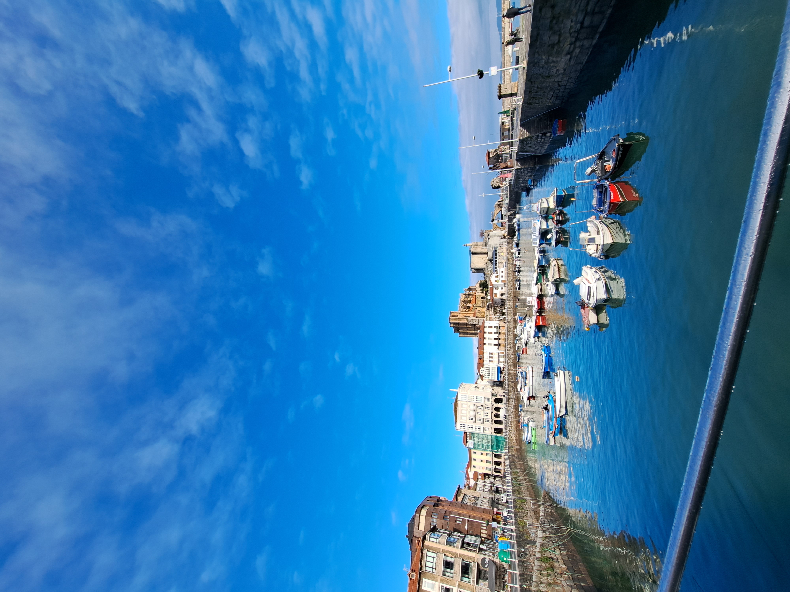

- Ane Pérez Senín
- DAW
- 19/11/2024
CONÓCEME
Mis datos
- Nombre: Ane Pérez
- Fecha de nacimiento: 10/07/2005
- Carnet de conducir: Muy pronto
- Municipio: Castro Urdiales
- Curso: Desarrollo de Apliaciones Web (DAW)
- Centro: Somorrostro
- Lenguajes de programación: HTML y CSS, Java, Python, C
Castro Urdiales, Cantabria
 

Contacto
- Correo Somorrostro: ane.perez05@somo.eus
- Correo personal: aneperezsenin1@gmail.com
- Teléfono: +34 665197865
- Perfil de github: https://github.com/anezrp
- Linkedin: https://www.linkedin.com/in/ane-p%C3%A9rez-6a8672328/